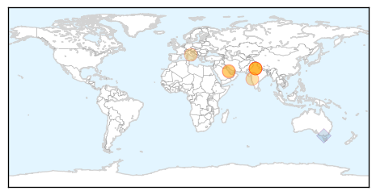
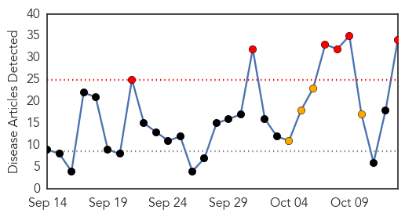
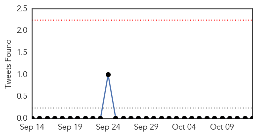
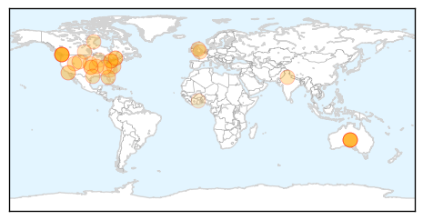

Swine Flu
30-Day Web Trend
5 alerts, 0 warnings

30-Day Twitter Trend
3 alerts, 0 warnings

Article Locations
Article Confidences

Top Articles:
- 1.000
- Swine flu kills 3 more in Pune, 810 H1N1 deaths in country
- 0.999
- Health Ministry affirms readiness to deal with H1N1 cases
- 0.995
- Bahrain dismisses rumour of swine flu outbreak
- 0.982
- Another dies of swine flu in Delhi
- 0.967
- Centre, Delhi govt confer how to tackle swine flu
- 0.890
- Union health ministry to issue guidelines on swine flu control
- 0.865
- Union health ministry to issue guidelines on swine flu control
- 0.832
- FDA to approve flu shot containing squalene which has been shown to cause severe autoimmune disorders -- Health & Wellness -- Sott.net
Top Tweets:
- 0.927
- RT: September saw 9 swine flu deaths http://t.co/u269ofEtSg India Maharashtra H1N1 influenza via
Influenza
30-Day Web Trend
6 alerts, 4 warnings

30-Day Twitter Trend
0 alerts, 0 warnings

Article Locations
Article Confidences
Top Articles:
- 0.999
- NVS Influenza Vaccines Welcomes North Carolina Congresswoman Renee Ellmers on Tour of Holly Springs Manufacturing Facility
- 0.997
- As flu season gets underway, officials urge vaccinations before Halloween
- 0.995
- Got your flu shot? Docs say don't wait
- 0.993
- Health officials urge "a sense of urgency" to get flu vaccination before season hits
- 0.991
- Health department seeing early flu cases
- 0.986
- Study finds flu vaccine helps reduce hospitalizations due to influenza pneumonia
- 0.984
- Doctors: Don't miss out on your flu shot
- 0.977
- Don’t skip flu shot based on last year’s failure, MDs warn
- 0.976
- Professor David Salisbury says all children should be vaccinated against flu
- 0.975
- The 2015 Flu Shot Promises To Be More Effective Than Last Year's
- 0.972
- Don’t skip flu shot based on last year’s failure, MDs warn
- 0.939
- Manifestations of Equine Herpesvirus-1
- 0.919
- Stores begin offering flu vaccines in preparation for flu season
- 0.888
- Shri Nadda meets Delhi Health Minister to review preparedness for Influenza
- 0.885
- Today's stories from newspapers in North Bay Nipissing
- 0.885
- Today's stories from newspapers in North Bay Nipissing
- 0.885
- Researchers enlightens nursing home patients with new high dose of Flu shots that can reduce hospitalization cases
- 0.877
- Vaccinating children may be cost-effective for tackling flu
- 0.865
- This year kids have an option of a nasal spray
- 0.863
- Calls for more flu shots for children following worst spread in 5 years
- 0.863
- Calls for more flu shots for children following worst spread in 5 years
- 0.843
- Calls for more flu shots for children following worst spread in 5 years
- 0.843
- Today's stories from newspapers in Parry Sound
- 0.807
- High Dose Influenza Shots Reduces Risk of Hospitalization in Older People
- 0.800
- Today's stories from newspapers in Ottawa
- 0.800
- Today's stories from newspapers in Ottawa
- 0.756
- Flu shots resume
- 0.751
- October 12, 2015 Archives
- 0.751
- October 12, 2015 Archives
- 0.741
- High dose influenza vaccine decreasing hospitalizations for nursing home residents
- 0.737
- Hospitals, clinics stress importance of flu shots
- 0.612
- CDC: Many Flu Patients Still Getting Antibiotics at Outpatient Clinics
- 0.573
- Researchers test quadruple-dose flu shot
- 0.572
- Larissa leads the way in treating human parainfluenza virus
Top Tweets:
- 0.718
- RT: Rajasthan: 3 more Influenza H1N1 deaths confirmed. State toll rises to 455. https://t.co/ppTIsqSIs0